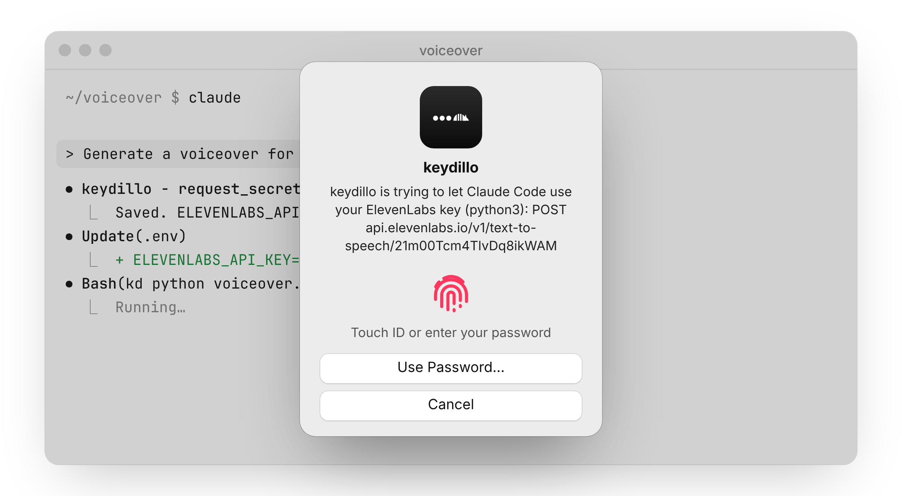
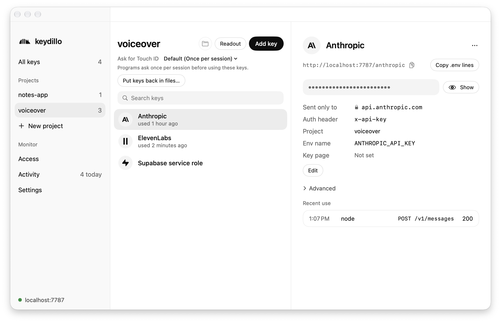

A Mac menu-bar app. Your .env holds placeholders, the real keys stay in the Keychain behind Touch ID.
Put kd in front of a command. keydillo swaps the placeholder only for that key's own host.
Claude, Cursor or your app only ever has the placeholder.
Checks the host, asks for Touch ID, adds the key from the Keychain.
Gets the real key. Any other host would need a new Touch ID.
Claude puts kd in front for you. Cursor and Codex work with kd too.

See where each key is sent and when it was last used.

AI agents never see your real API keysThe .env only holds placeholders.
Launch-time keys aren't fully hiddenDatabase URLs and JWT secrets reach the program you start.
Committing .env leaks nothingOnly the placeholder is in the file.
Go and Rust clients need a base URLThey ignore kd's certificate, so call localhost:7787 instead.
Keys only go to their own hostA new host needs your Touch ID.
An approved session can still use a keykeydillo guards the key, not what is done with it.
Other apps can't read your keysPrivate Keychain group, behind Touch ID.
Copies from before you installed itOld .env files, shell and git history. Rotate those keys.